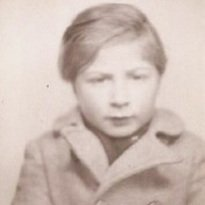

Portrait d’archive
Jean-Marc Dynerman
Jean-Marc DYNERMAN
Nom : DYNERMAN
Prénom(s) : Jean-Marc, Jeannot
Date naissance : 19/12/1938
Âge (ans) : 5
Lieu naissance : Paris
Pays ou département : Seine
Lieu rassemblement : Lyon
Dernière adresse : 86, rue Folie-Méricourt
Ville : Paris 11
Code postal : 75011
N° Convoi : 69
Date déportation : 07/03/1944
Informations diverses : Jean-Marc est le fils de Esther née Bouterman (06/05/1911, Góra Kalwaria ou Varsovie), couturière et de Marcel Dynerman (16/09/1909, Varsovie), tailleur. Il est né à Lyon. La famille habitait rue de la Folie Méricourt Paris 11eme. La famille fut arrêtée par les douaniers Allemands à la Frontière à Annemasse (74) et est détenue à L’hôtel PAX sous les N° 468 - 469. Jeannot Dienermann est hébergé à la Maison du Refuge (77, rue de la Villette 69003 Lyon) du 08/02/1944 au 02/03/1944 (Source: S. Altar). Ses parents sont internés le 29/01/1944 à la prison Montluc (Lyon) et la famille est transférée le 07/03/1944 à Drancy. Âgé de 6 ans, Jean-Marc est déporté avec sa mère Esther (06/05/1911, Varsovie) matricule 16076 et son père Marcel (16/09/1909, Varsovie) matricule 16075, par le convoi 69 au départ de Drancy le 07/03/1944. Il porte le matricule 16077. Une stèle porte son nom au jardin de la Folie Titon (ex Cité Prost) à Paris.
Dynerman (Jean, Marc), né le 19 décembre 1938 à Paris 12e (Seine), décédé le 12 mars 1944 à Auschwitz (Pologne). JO
Lieu de déportation : Auschwitz
Lieu de départ : Drancy
Nombre total de déporté·e·s du convoi : 1501
Gazé·e·s à l'arrivée : 1311 (87,3 %)
Survivant·e·s en 1945 : 34 (2,3 %)